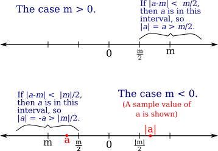
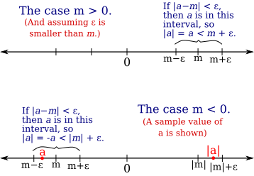

05 Aplying the Axioms
The axioms for the real numbers are a foundation that can be used to prove other properties of $\R$. Section 1.3 includes some examples of using the field axioms to prove things that must be true in any field. But more important for us is using the order axioms to define and prove things about absolute value and distance. Application of the completeness axiom will begin in Section 1.4 with the Heine-Borel Theorem.
The field axioms can be used to prove things about arithmetic operations that you probably use automatically and regard as intuitive. The point here is that they are not things that have to be assumed separately; once we have the field axioms, these other "obvious" things follow logically.
There are several uniqueness results: 0 is the only additive identity, 1 is the only multiplicative identity, a real number $a$ has exactly one additive inverse, and a non-zero number $a$ has exactly one multiplicative inverse. This allows us to write $-a$ for the additive inverse of $a$ and to define subtraction by $b-a=b+(-a)$. Similarly, we can define $a^{-1}$ for a non-zero number $a$ and division by $\frac ba = b\cdot a^{-1}$. The existence of inverses is what makes "cancellation" possible. For example,
Theorem: Let $a$, $b$, and $c$ be elements of some field. Suppose that $ab=ac$ and $a\ne 0$. Then $b=c.$
Proof: Since $a$ is non-zero, it has a multiplicative inverse. So, we have $$\begin{array}{rll} ab\!\!\!\!&=ac &\mbox{(Assumption)}\\ a^{-1}(ab)\!\!\!\!&=a^{-1}(ac)&\mbox{($a$ has multiplicative inverse $a^{-1}$)} \\ (a^{-1}a)b\!\!\!\!&=(a^{-1}a)c &\mbox{(Associativity of multiplication)}\\ 1b\!\!\!\!&=1c &\mbox{(Multiplicative inverse: $a^{-1}a=1$)}\\ b\!\!\!\!&=c &\mbox{(1 is the multiplicative identity) }\qed\\ \end{array}$$
(The textbook justifies steps in some proofs by listing axiom numbers. Note that you do not have to memorize the axiom numbers, but you should remember the names of the properties.)
We can take most of the properties of addition, multiplication, and comparison as being well-known, but it would still be useful to look through their proofs in the textbook. We should spend a little more time on absolute value and distance.
The first order axiom is Trichotomy: For any real number $a$, exactly one of the following is true: $a<0$, $a=0$, or $a>0$. The other two order axioms state that for any two positive numbers $a$ and $b$, $a+b$ and $ab$ are also positive. We can use the Trichotomy property to define absolute value, and then use absolute value to define distance.
Definition: For $a\in\R$, we define the absolute value of $a$, denoted $|a|$, by $$|a|= \begin{cases} a&\mbox{if $a>0$}\\ 0&\mbox{if $a=0$}\\ -a&\mbox{if $a<0$} \end{cases}$$ For $a,b\in\R$, we define the distance between $a$ and $b$ to be $|a-b|$. (Note that $|a|$ is the distance from $a$ to 0.)
Of course, $|a|=a$ for all $a\ge0$, but my definition makes it clear that it is the Trichotomy axiom that is being used. Some basic properties can be proved easily using the axioms.
Theorem: For $a,b\in\R$, $|ab|=|a|\cdot|b|$, $|-a|=|a|$, $|a-b|=|b-a|$, and $|a-b|=0$ if and only if $a=b$.
Proof: We first prove that $|ab|=|a|\cdot|b|$. In the case $a=0$ or $b=0$, both $|ab|$ and $|a|\cdot|b|$ are zero, so they are equal. In the case $a>0$ and $b>0$, we have $ab>0$, so $|ab|=ab=|a|\cdot|b|$, In the case $a<0$ and $b<0$, again $ab>0$, so $|ab|=ab=(-a)(-b)=|a|\cdot|b|$. In the case $a>0$ and $b<0$, $ab<0$, so $|ab|=-ab=a(-b)=|a|\cdot|b|$. And the case $a<0$ and $b>0$ is similar.
It then follows that $|-a|=|-1|\cdot|a|=1\cdot|a|=|a|$. From that, it follow that $|a-b|=|-(b-a)|=|b-a|$. Finally, by definition of absolute value, $|a-b|=0$ if and only if $a-b=0$, which is true if and only if $a=b$.
The last part of this theorem is the important fact that the distance between $a$ and $b$ is zero if and only if $a$ is equal to $b$. And the next-to-last part says that distance is symmetric: the distance from $a$ to $b$ is the same as the distance from $b$ to $a$. One of the most important properties of distance is the triangle inequality, which says that for any $a,b,c\in\R$, $$|a-c|\le|a-b|+|b-c|$$ That is, going from $a$ to $c$ directly cannot be longer than going from $a$ to $b$ and then from $b$ to $c$. The triangle inequality can also be expressed as a fact about absolute value, which is the version given in the book: For any $a,b\in\R$, $|a|+|b|\ge|a+b|$. This is intuitively clear since when $a$ and $b$ are both positive or both negative, $|a|+|b|=|a+b|$, but when one is positive and one is negative, you get some cancellation on the right side of the inequality but not on the left (for example, $|3+(-5)| = |-2| = 2$, but $|3|+|-5|=3+5=8$). The triangle inequality for distance follows from the triangle inequality for absolute value: Suppose $a,b,c\in\R$. Let $x=a-b$ and $y=b-c$. Then $$\begin{align*} |a-b|+|b-c| &= |x|+|y|\\ &\ge|x+y|\\ &=|(a-b)+(b-c)|\\ &=|a + (-b+b) - c|\\ &=|a + 0 -c|\\ &=|a-c| \end{align*}$$
The triangle inequality will be one of the most useful tools for proofs in the rest of this course. Some related facts about absolute value and distance will also be useful, including Theorem 1.3.12 from the textbook:
Theorem: For any $a,b\in \R$ with $b\ge0$, $|a|\le b$ if and only if $-b\le a\le b$.
This is used in the book's proof of the triangle inequality. I want to use it to prove two additional facts that will be useful in future proofs. The first fact is useful when we want to show that some quantity, $a$, is not too close to zero. If we can show that $a$ is close to some non-zero number, $m$, then $a$ can't be too close to zero. In particular, if $a$ is within $\frac{|m|}{2}$ of $m$, then $a$ cannot be closer to zero than $\frac{|m|}{2}.$
Theorem: Suppose $a,m\in \R$ and $|a-m|\le\frac{|m|}{2}$. Then $|a|\ge\frac{|m|}{2}$.
Proof: Suppose that $|a-m|\le\frac{|m|}{2}$. By the previous theorem, $-\frac{|m|}{2}\le a-m \le \frac{|m|}{2}$.
Consider the case $m\ge0$, so that $|m|=m$. Then the first inequality, $-\frac{|m|}{2}\le a-m$, becomes $-\frac{m}{2}\le a-m$ and adding $m$ to both sides gives $\frac{m}{2}\le a$. That is, $a\ge\frac{m}{2}=\frac{|m|}{2}$. And because $\frac{m}{2}\ge0$, we also have $a\ge0$, so $a=|a|$. So we get $|a|\ge\frac{|m|}{2}$.
Turing to the case $|m|<0$, we have $|m|=-m$ and the inequality $a-m \le \frac{|m|}{2}$ becomes $a-m\le -\frac{m}{2}$. Adding $m$ to both sides gives $a\le\frac{m}{2}$. Multiplying by $-1$ then gives $-a\ge=-\frac{m}{2}$. Since $\frac{m}{2}<0$, we see that $a$ is also negative, so the inequality $-a\ge=-\frac{m}{2}$ can be written $|a|\ge\frac{|m|}{2}$. $\qed$
If the proof is confusing, this diagram shows that the geometry is clear:

Sometimes, we need to bound $a$. That is, we want to find some limit on how big $|a|$ can be. If we can show that $a$ is close to some number $m$, then we can show that $|a|$ cannot be too much bigger than $|m|.$
Theorem: Suppose $a,m\in \R$ and $\eps>0$. If $|a-m|\le\eps$, then $|a|\le|m|+\eps$.
Proof: Suppose that $|a-m|\le\eps$. Then $-\eps\le a-m\le \eps$. Adding $m$ gives $m-\eps\le a\le m+\eps$.
Consider the case where $m\ge0$. Then the inequality $a\le m+\eps$ becomes $a\le |m|+\eps$. [If $\eps$ is small compared to $m$, then $a$ will have the same sign as $m$, so in this case, $a$ would be positive, and $a=|a|$. This means we already have $|a|\le |m|+\eps$; however, to cover all possibilities, we need to consider the general case where $a$ can be negative.] Now, for any $m$, $-|m|\le m$, and so from the inequality $m-\eps\le a$, we get $-(|m|+\eps)=-|m|-\eps\le m-\eps\le a$. Combining that with the previous inequality, we have $-(|m|+\eps)\le a\le (|m|+\eps)$, which is equivalent to $|a|\le|m|+\eps$.
Turning to the case $m<0$, from $|m-a|<\eps$, we get $|(-m)-(-a)|=|-(m-a)|=|m-a|<\eps$. Since $-m>0$, we can apply the previous case to $|(-m)-(-a)|<\eps$, showing that $|-a|≤|-m|+\eps$. But $|-a|=|a|$ and $|-m|=|m|$, so we have in fact $|a|<|m|+\eps$. $\qed$
And here is a diagram showing the geometry, in the case where $\eps$ is small compared to $|m|$:
